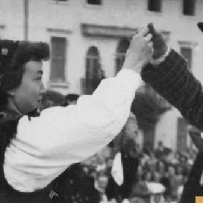

ven 20 nov · dalle 16:00
Teche Folk tra metodologia e pratica
Venerdì 20 novembre 2026 16.00 Udine, Palazzo Mantica, Salone d'onore "G. Pelizzo", via Manin 18 Teche Folk è un progetto nato con l’obiettivo di creare un archivio digitale del patrimonio folcloristico del Friuli Venezia Giulia secondo criteri scientifici e standard…
 Indicazioni
Indicazioni
- Costi e prenotazioni
- Costo non indicato · Prenotazione non indicata
- Programma
- Programma da verificare. Apri la fonte ufficiale per orari e possibili aggiornamenti.
- In caso di maltempo
- Nessuna indicazione specifica pubblicata.
- Note
- Acquisito automaticamente dalla fonte.
L’EVENTO
Descrizione completa
Teche Folk è un progetto nato con l’obiettivo di creare un archivio digitale del patrimonio folcloristico del Friuli Venezia Giulia secondo criteri scientifici e standard ministeriali. Promosso da UGF FVG il progetto valorizza musiche, danze, costumi, oggetti di scena e documenti, contribuendo alla conservazione e alla conoscenza di un patrimonio culturale in continua evoluzione. A conclusione del primo triennio di attività si intende valorizzare il lavoro svolto insieme ai gruppi folcloristici regionali e fare il punto sulle prospettive future. Una proposta di riflessione - che vuole anche essere un bilancio del lavoro fatto - sugli strumenti e sulle pratiche che guidano le azioni di documentazione e salvaguardia del patrimonio immateriale.
Nucleo di partenza del confronto sarà il progetto di ricerca sui folclorismi contemporanei, promosso dall’Istituto Centrale per il Patrimonio Immateriale e dalla Scuola di specializzazione in Beni demoetnoantropologici dell’Università di Perugia, che fornirà il quadro teorico e metodologico di riferimento.
Al tavolo parteciperanno dieci enti e istituzioni culturali e amministrative, tra cui, oltre ai due soggetti già citati, la Soprintendenza Archeologia, belle arti e paesaggio per il Friuli Venezia Giulia, la Direzione centrale Cultura e Sport della Regione FVG, l’Università di Udine, ERPAC – Servizio gestione Villa Manin, catalogazione e sviluppo del territorio, il Museo Etnografico del Friuli e il Centro Internazionale Ricerca Tessile. L’obiettivo è discutere non soltanto le metodologie dell’azione, ma anche i temi e le sfide che coinvolgono istituzioni, enti e comunità nel costruire interventi e azioni sostenibili su pratiche culturali, come appunto quelle dei Gruppi Folcloristici, da rispettare nelle loro forme, significati e cambiamenti.
Dalle conclusioni nascerà un documento di lavoro, utile a orientare i futuri sviluppi del progetto Teche Folk.
Per informazioni: Unione Gruppi Folcloristici del Friuli Venezia Giulia
t. 371 1703943
info@ugf-fvg.org
www.ugf-fvg.org
IL PROGRAMMA
Programma e orari
Appuntamenti raccolti dalle fonti elencate. Dove manca un orario, non è ancora disponibile in questa scheda.
Programma pubblicato
- Dal 2026-11-20 al 2026-11-20
INFORMAZIONI UTILI
Prima di partire
- Controllare la fonte prima di partire.
ORGANIZZAZIONE